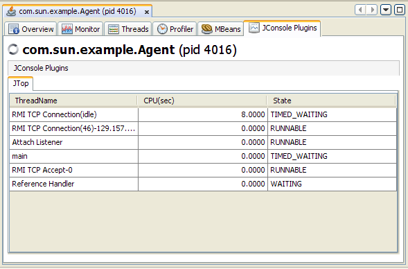

JConsole Plug-in Wrapper Tab
An optional VisualVM plug-in exists that allows you to add any custom tabs that you might have created for the Java platform, Standard Edition (Java SE) monitoring and management console, JConsole, to VisualVM. Any plug-ins that you built for JConsole can easily be added to VisualVM using the optional JConsole plug-in wrapper tab.
Note: For details of how to create custom tab plug-ins for JConsole, see Creating Custom Tabs in the Java SE platform Monitoring and Management Guide. However, if you are using VisualVM without ever having created custom tabs for JConsole, you should create your custom plug-ins directly for VisualVM. See Getting Started Extending VisualVM and VisualVM API FAQs for more information about creating VisualVM plug-ins.
Adding the JConsole Plug-In Wrapper Tab
To add the JConsole plug-in wrapper tab to VisualVM, take the following steps:
- Select 'Tools' then 'Plugins' in the VisualVM drop-down menus. You will see the following window.

- Check 'VisualVM-JConsole' and click 'Install'.
- Step through the on-screen instructions.
- Now, if you highlight a running Java application, right-click, and then select 'Open', you will see the JConsole Plugins tab in VisualVM's right-hand window. However, no JConsole plug-ins are displayed in the tab yet, as shown below.

- You can now import your custom JConsole plug-ins via the Tools | Options menu.
- Click on 'JConsole Plugins'.
- Click on 'Add JAR/Folder' and navigate to your JConsole plug-in's Java archive (JAR) file. An example JConsole plug-in called JTop is provided with the Java SE 6 platform. The JTop application is a JDK demonstration that shows the CPU usage of all threads running in the application. This demo is useful for identifying threads that have high CPU consumption, and it has been updated to be used as a JConsole plug-in as well as a standalone GUI. The JAR file for the JTop plug-in is found at JDK_HOME/demo/management/JTop/JTop.jar, where JDK_HOME is the location where the JDK software is installed.

- In the JConsole Plugins Options panel, you can also set the polling period. This option defines the regularity with which the JConsole Plugins tab will update the information presented by the different JConsole plug-ins that have been imported into the tab.
- Close the Options panel by clicking OK.
- In VisualVM's right-hand panel, close the tab of the process being monitored.
- Restart the monitoring of the process by right-clicking on the process in the left-hand panel and selecting Open. A JTop tab should now be visible in the JConsole Plugins tab.

The JTop tab has been added, showing the CPU usage of the various threads running.
Return to the VisualVM Documentation index